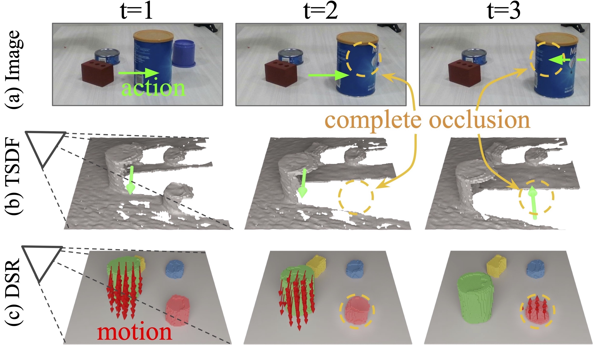
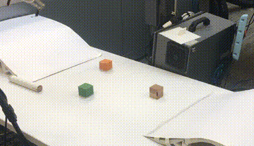

Zhenjia Xu
Phd Student
Computer Science Department
Columbia University
Email: xuzhenjia [at] cs (dot) columbia (dot) edu
Google Scholar /
GitHub /
LinkedIn
I am a second-year PhD student at Columbia University, advised by Shuran Song. I'm interested in robotics and computer vision.
Before coming to Columbia, I received my B.Eng. in Computer Science from Shanghai Jiao Tong University. During my undergrad, I was fortunate to work with Jiajun Wu and Josh Tenenbaum.

